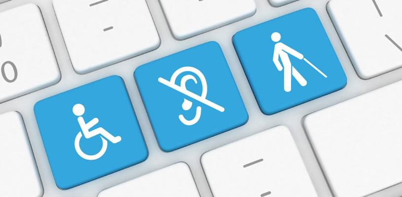
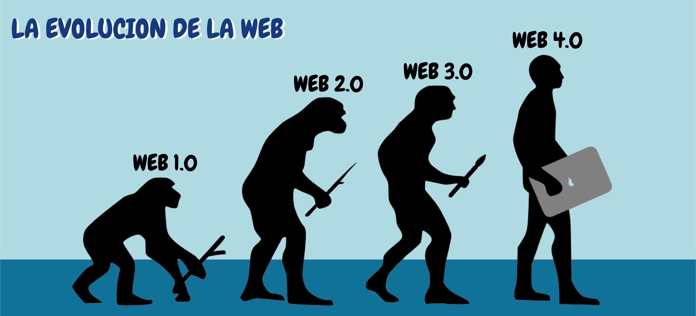
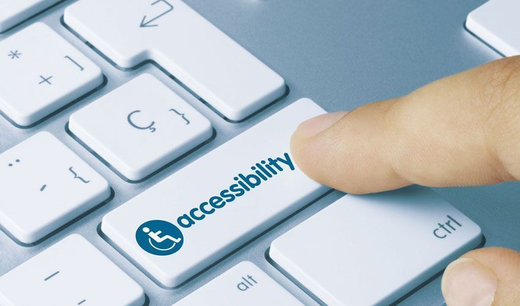

Tema 2: Accesibilidad Web.
1.Concepto y objetivos de la Accesibilidad Web
La accesibilidad web tiene como objetivo lograr que las páginas web sean utilizables por el máximo número de personas, independientemente de sus conocimientos o capacidades personales e independientemente de las características técnicas del equipo utilizado para acceder a la Web.
Accesibilidad Web significa que sitios web, herramientas y tecnologías están diseñadas y desarrolladas de tal manera que las personas con discapacidades pueden usarlas. Más concretamente, las personas pueden: percibir, comprender, navegar e interactuar con la Web contribuir a la Web
La Accesibilidad web abarca todas las discapacidades que afectan al acceso a la Web, incluyendo:auditivas, cognitivas, neurológicas, físicas, del habla, visuales.
2.El consorcio World Wide Web (W3C)

El Consorcio WWW, en inglés: World Wide Web Consortium (W3C), es un consorcio internacional que genera recomendaciones y estándares que aseguran el crecimiento de la World Wide Web a largo plazo.
Este consorcio fue creado en octubre de 1994,4 y está dirigido por Tim Berners-Lee
• Miembros: a abril de 2010 contaba con 330 miembros.
• Equipo (W3C Team): 65 investigadores y expertos de todo el mundo.
• Oficinas (W3C Offices): centros regionales establecidos
3.Evolución de la web
La Web 1.0. Los comienzos: La Web 1.0 empezó en los años 60 de la forma más básica que existe, con navegadores de sólo texto bastante rápidos como ELISA. Después surgió el HTML que hizo las páginas web más agradables a la vista, así como los primeros navegadores visuales.
La Web 2.0. Un paso adelante: Está comúnmente asociado con un fenómeno social, basado en la interacción que se logra a partir de diferentes aplicaciones web, que facilitan el compartir información, la interoperabilidad, el diseño centrado en el usuario o D.C.U. y la colaboración en la World Wide Web.
La Web 3.0 (la Web semántica). Nuevos retos: Se asocia al término de Web Semántica, acuñado por Tim Berners-Lee, cabe acotar, valga la paradoja, que no existe total consenso acerca de lo que significa la Web 3.0. Aunque se coincide en que esta etapa añadirá significado a la web, no hay acuerdo sobre cuáles son los caminos más apropiados para su desarrollo.
4.Pautas de accesibilidad para el diseño web.
Versión WCAG 1.0: Web Content Accessibility Guidelines 1.0 (WCAG 1.0) es una recomendación del 5 de mayo de 1999 del W3C que explica cómo hacer el contenido web accesible a las personas con discapacidad.
Versión WCAG 2.0: Estándares técnicos estables y de referencia. Contienen 12-13 pautas que se agrupan en cuatro principios: perceptible, operable, comprensible y robusto. Cada pauta incluye criterios de conformidad, que se pueden comprobar y que se clasifican en tres niveles: A, AA y AAA.
o Nivel A: Para lograr conformidad con el Nivel A (el mínimo), la página web satisface todos los Criterios de Conformidad del Nivel A, o proporciona una versión alternativa conforme.
o Nivel AA: Para lograr conformidad con el Nivel AA, la página web satisface todos los Criterios de Conformidad de los Niveles A y AA, o proporciona una versión alternativa conforme al Nivel AA.
o Nivel AAA: Para lograr conformidad con el Nivel AAA, la página web satisface todos los Criterios de Conformidad de los Niveles A, AA y AAA, o proporciona una versión alternativa conforme al Nivel AAA.
5.Consejos para crear una web accesible
- Crear páginas que se adapten bien a cualquier tipo de dispositivo
- o Que sea posible la interacción con la web mediante la voz, el ratón, teclado u otro.
- o No hacer páginas planas de texto plano sin ningunos elementos gráficos.
- o Utilizar el texto alt (alternativo) descriptivo para imágenes y elementos gráficos
- o Subtitular y transcribir los elementos audio y vídeo.
- Organiza el sitio de manera muy clara y fácil de comprender
- o Para la presentación de contenidos hay que utilizar hojas de estilo CSS y marcadores
6.Herramientas de evaluación
La evaluación, revisión o análisis de la accesibilidad web tiene por fin analizar, estudiar y validar las páginas web con el objetivo de que las páginas web no presenten problemas de accesibilidad y cumplan las pautas y directrices de accesibilidad existentes.
La evaluación de la accesibilidad web se puede realizar de forma automática o manual. Para ello se emplean diversas herramientas de revisión.
Herramientas de evaluación automáticas: Las herramientas de revisión automática de la accesibilidad comprueban si se cumplen los puntos de verificación de las pautas de accesibilidad que se pueden evaluar de forma automática.